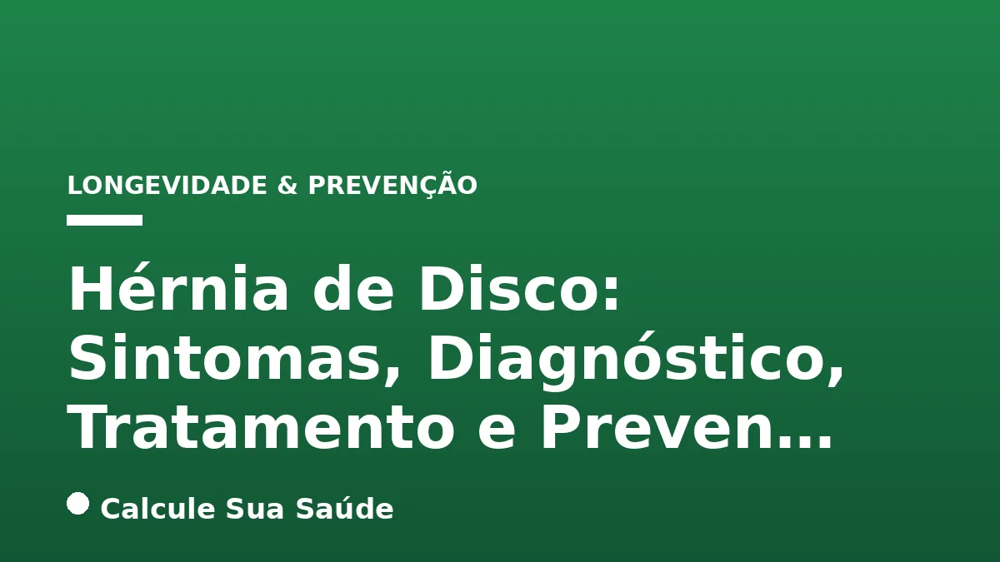

Aviso médico importante
Este conteúdo é educativo e informativo e não substitui a consulta, o diagnóstico ou o tratamento de um profissional de saúde. Em caso de sintomas, procure orientação médica.
Índice do Artigo
- 1. A Coluna Vertebral e os Discos Intervertebrais: Fundamentos Anatômicos
- 2. O Que é Hérnia de Disco? Entendendo a Lesão
- 3. Classificação da Hérnia de Disco: Localização e Morfologia
- 4. Causas e Fatores de Risco para o Desenvolvimento da Hérnia de Disco
- 5. Sintomas da Hérnia de Disco: Manifestações Clínicas e Irradiação da Dor
- 6. Sinais de Alerta e Urgências Médicas na Hérnia de Disco
- 7. Diagnóstico Preciso da Hérnia de Disco: Da Anamnese aos Exames de Imagem
- 8. Estratégias de Prevenção: Cuidando da Saúde da Coluna
- 9. Abordagens de Tratamento Conservador (Não Cirúrgico)
- 10. Indicações e Técnicas do Tratamento Cirúrgico da Hérnia de Disco
- 11. Mitos e Verdades Comuns sobre a Hérnia de Disco: O Que a Ciência Diz
- 12. Mitos e Verdades Comuns sobre a Hérnia de Disco: O Que a Ciência Diz
- 13. Mitos e Verdades Comuns sobre a Hérnia de Disco: O Que a Ciência Diz
- 14. Mitos e Verdades Comuns sobre a Hérnia de Disco: O Que a Ciência Diz
- 15. Mitos e Verdades Comuns sobre a Hérnia de Disco: O Que a Ciência Diz
- 16. Epidemiologia da Hérnia de Disco: Dados e Prevalência no Brasil e no Mundo
- 17. Manejo da Dor Crônica e Qualidade de Vida com Hérnia de Disco
- 18. A Importância da Abordagem Multiprofissional no Cuidado da Hérnia de Disco
- 19. Perguntas frequentes
A coluna vertebral, estrutura central de suporte do corpo humano, é composta por vértebras, ligamentos e, entre cada vértebra, discos intervertebrais. Essas estruturas em forma de anel atuam como amortecedores, permitindo mobilidade, absorvendo impactos e protegendo a medula espinhal e os nervos. No entanto, com o tempo e devido a diversos fatores, esses discos podem sofrer desgaste, levando a uma condição conhecida como hérnia de disco.
A hérnia de disco ocorre quando o material gelatinoso interno (núcleo pulposo) de um disco se projeta através de uma fissura na camada externa mais resistente (anel fibroso). Esse deslocamento pode comprimir ou irritar os nervos próximos ou a medula espinhal, resultando em dor, dormência, fraqueza e outros sintomas que podem impactar significativamente a qualidade de vida do indivíduo. Compreender essa condição é fundamental para um diagnóstico precoce e um tratamento eficaz.
Neste artigo aprofundado, o portal Calcule Sua Saúde, baseado em evidências científicas, explora a hérnia de disco em detalhes. Abordaremos desde a anatomia da coluna e os diferentes tipos de hérnia, passando pelas suas causas e fatores de risco, até os sintomas característicos, métodos de diagnóstico, opções de tratamento – conservador e cirúrgico – e, crucialmente, estratégias de prevenção. Nosso objetivo é fornecer informações claras e precisas para auxiliar na compreensão e no manejo dessa patologia tão comum.
Em resumo
- A hérnia de disco é o extravasamento do núcleo pulposo do disco intervertebral, que pode comprimir nervos e causar dor.
- Existem tipos de hérnia de disco classificados por localização (lombar, cervical, torácica) e gravidade (protusa, extrusa, sequestrada).
- Fatores como envelhecimento, sedentarismo, tabagismo, obesidade e má postura aumentam o risco de desenvolver a condição.
- Os sintomas variam de dor localizada e irradiada a dormência, formigamento e fraqueza muscular, podendo, em casos graves, levar à disfunção urinária/intestinal.
- O diagnóstico é feito por história clínica, exame físico e, principalmente, ressonância magnética, que detalha a lesão e compressão nervosa.
- A maioria dos casos melhora com tratamento conservador (medicamentos, fisioterapia), sendo a cirurgia reservada para situações específicas e graves.
1. A Coluna Vertebral e os Discos Intervertebrais: Fundamentos Anatômicos
Para compreender a hérnia de disco, é essencial primeiro entender a estrutura da coluna vertebral. A coluna é uma complexa estrutura óssea e cartilaginosa que se estende da base do crânio até a pelve, composta por 33 vértebras divididas em regiões: cervical (pescoço), torácica (tórax), lombar (parte inferior das costas), sacral e coccígea. Entre a maioria das vértebras móveis, encontram-se os discos intervertebrais.
Esses discos são estruturas fibrocartilaginosas em formato de anel, com aproximadamente 1 a 2 centímetros de espessura. Eles desempenham funções cruciais: atuam como amortecedores de choque, absorvendo as cargas e pressões impostas à coluna; permitem a flexibilidade e a mobilidade da coluna em diferentes direções; e mantêm o espaço entre as vértebras, protegendo os nervos que emergem da medula espinhal. Cada disco é composto por duas partes principais: um anel fibroso externo, resistente e composto por múltiplas camadas de cartilagem fibrosa, e um núcleo pulposo interno, uma substância gelatinosa e elástica, rica em água, que confere ao disco suas propriedades de absorção de impacto.
Com o passar do tempo, os discos intervertebrais podem sofrer um processo natural de degeneração. Eles perdem parte de seu conteúdo de água, tornando-se menos elásticos e mais suscetíveis a danos. Esse desgaste progressivo, somado a outros fatores de risco, pode comprometer a integridade do anel fibroso, facilitando a protusão ou o extravasamento do núcleo pulposo, caracterizando a hérnia de disco.
2. O Que é Hérnia de Disco? Entendendo a Lesão
A hérnia de disco é uma condição em que o núcleo pulposo, a parte central e gelatinosa do disco intervertebral, se desloca de sua posição normal. Esse deslocamento ocorre geralmente através de uma fissura ou rompimento no anel fibroso, a camada externa mais resistente que envolve o núcleo. O termo “hérnia” refere-se ao extravasamento ou protusão de um órgão ou tecido de sua cavidade normal, e, no contexto da coluna, descreve precisamente o movimento anormal do material discal.
Quando o núcleo pulposo extravasa, ele pode comprimir ou irritar as raízes nervosas adjacentes ou, em casos mais graves, a própria medula espinhal. Essa compressão e inflamação dos nervos são as principais causas dos sintomas dolorosos e neurológicos associados à hérnia de disco. A localização e a intensidade da dor, bem como a presença de outros sintomas, dependem diretamente de qual nervo está sendo afetado e da extensão da compressão.
É importante diferenciar a hérnia de disco de outras condições da coluna, como a protusão discal, onde o disco se alarga, mas o núcleo pulposo permanece contido, sem extravasamento. Embora a protusão também possa causar sintomas, a hérnia de disco geralmente implica um comprometimento mais significativo da estrutura discal e um potencial maior para compressão nervosa. A compreensão dessa distinção é crucial para o diagnóstico e a escolha do tratamento adequado.
3. Classificação da Hérnia de Disco: Localização e Morfologia
As hérnias de disco são classificadas de acordo com sua localização na coluna vertebral e pela morfologia ou gravidade da lesão. Essa classificação é fundamental para o diagnóstico preciso e para guiar as decisões de tratamento.
Tipos por Localização:
- Hérnia de Disco Lombar: É a forma mais comum, ocorrendo na parte inferior da coluna, entre as vértebras lombares (L1-L5). Frequentemente causa dor lombar que pode irradiar para as nádegas, pernas e pés, conhecida como ciática.
- Hérnia de Disco Cervical: Afeta os discos na região do pescoço, entre as vértebras cervicais (C1-C7). Os sintomas incluem dor no pescoço que pode irradiar para os ombros, braços e mãos, além de dormência e fraqueza nos membros superiores.
- Hérnia de Disco Torácica: É a forma menos frequente, localizada na parte média da coluna, entre as vértebras torácicas (T1-T12). A dor pode se manifestar na parte média das costas e, ocasionalmente, irradiar para o peito ou abdômen, simulando outras condições.
Tipos por Morfologia (Gravidade):
A classificação morfológica descreve o grau de extravasamento do núcleo pulposo:
- Protusas: O disco se alarga, projetando-se para fora, mas o anel fibroso permanece intacto e o líquido gelatinoso central ainda está contido. A base do disco se avoluma, mas não há rompimento completo da camada externa.
- Extrusas: Ocorre o rompimento do anel fibroso, e o conteúdo gelatinoso interno (núcleo pulposo) extravasa através de uma fissura. Nesse tipo, há perda de contato dos fragmentos extravasados com o seu meio interno, ou seja, o material discal se projeta para fora do disco, mas ainda está conectado a ele.
- Sequestradas: Considerado o tipo mais grave, a lesão no disco é tão intensa que o material do núcleo pulposo extravasa e se separa completamente do disco de origem, migrando para o canal vertebral. Isso pode causar uma compressão contínua e severa da raiz nervosa ou da medula espinhal, exigindo atenção médica imediata.
A identificação precisa do tipo e da localização da hérnia é crucial para determinar a melhor estratégia de tratamento e prever o prognóstico do paciente.
4. Causas e Fatores de Risco para o Desenvolvimento da Hérnia de Disco
A hérnia de disco não surge de uma única causa, mas sim de uma combinação de fatores que contribuem para o desgaste e a vulnerabilidade dos discos intervertebrais. A principal causa é o processo natural de envelhecimento e degeneração dos discos. Com o tempo, eles perdem água, elasticidade e resistência, tornando-se mais frágeis e propensos a lesões.
Além do envelhecimento, diversos fatores de risco podem acelerar esse processo ou aumentar a probabilidade de uma hérnia de disco se desenvolver:
- Fatores Genéticos: A predisposição genética pode influenciar a qualidade e a resistência dos discos intervertebrais, tornando algumas pessoas mais suscetíveis a desenvolver hérnias.
- Sedentarismo: A falta de atividade física regular leva ao enfraquecimento dos músculos do tronco e do abdômen (o chamado “core”), que são essenciais para dar suporte e estabilidade à coluna. A musculatura enfraquecida aumenta a pressão sobre os discos.
- Tabagismo: O hábito de fumar acelera o processo de desgaste e envelhecimento dos discos, comprometendo sua nutrição e elasticidade. As substâncias tóxicas presentes no cigarro podem danificar os vasos sanguíneos que nutrem os discos, prejudicando sua capacidade de reparo.
- Obesidade e Excesso de Peso Corporal: O peso corporal elevado impõe uma carga excessiva e constante sobre os discos da coluna, especialmente na região lombar. Essa pressão aumentada pode levar ao desgaste prematuro e ao risco de hérnia. Manter um peso saudável é crucial para a saúde da coluna, e estratégias para reduzir o excesso de peso corporal são benéficas.
- Má Postura: Posturas inadequadas mantidas por longos períodos, seja ao sentar, levantar objetos ou durante atividades diárias, podem desalinhar a coluna e aumentar a pressão sobre os discos, promovendo seu desgaste.
- Movimentos Repetitivos e Esforços Físicos Inadequados: Atividades que envolvem levantar objetos pesados de forma incorreta, torcer a coluna repetidamente ou curvar-se com frequência podem causar microtraumas e desgaste nos discos intervertebrais.
- Vibrações Intensas: A exposição prolongada a vibrações, como as experimentadas por motoristas de veículos pesados ou operadores de máquinas, pode contribuir para a degeneração dos discos.
- Lesões na Coluna ou Traumas Diretos: Acidentes, quedas ou impactos diretos na coluna podem causar danos agudos aos discos, levando à formação de hérnias.
É fundamental reconhecer esses fatores para implementar medidas preventivas e reduzir o risco de desenvolver ou agravar uma hérnia de disco.
5. Sintomas da Hérnia de Disco: Manifestações Clínicas e Irradiação da Dor
Os sintomas da hérnia de disco são altamente variáveis, dependendo de fatores como a localização da hérnia (lombar, cervical ou torácica), a gravidade do extravasamento do disco e, principalmente, quais nervos estão sendo comprimidos ou irritados. Em muitos casos, hérnias de disco podem ser assintomáticas, sendo descobertas incidentalmente em exames de imagem realizados por outras razões.
Quando os sintomas se manifestam, os mais comuns incluem:
- Dor Intensa na Área Afetada: A dor pode ser localizada no pescoço, na parte média das costas ou na região lombar. Sua intensidade varia de leve a incapacitante e é frequentemente agravada por movimentos específicos, tosse, espirros ou esforços que aumentam a pressão intra-abdominal.
- Dor Irradiada (Radiculopatia): Este é um sintoma característico da compressão nervosa.
- Hérnia Lombar: A dor lombar pode irradiar para as nádegas, parte posterior da coxa, pernas e pés, seguindo o trajeto do nervo ciático (ciatalgia).
- Hérnia Cervical: A dor no pescoço pode irradiar para os ombros, braços, antebraços e mãos, dependendo da raiz nervosa afetada.
- Hérnia Torácica: A dor na parte média das costas pode irradiar para o peito ou abdômen, seguindo o trajeto dos nervos intercostais.
- Dormência ou Formigamento (Parestesia): Sensações de agulhadas, formigamento ou perda de sensibilidade são comuns nas áreas do corpo inervadas pelo nervo irritado ou comprimido, como braços, mãos, pernas ou pés.
- Fraqueza Muscular: A compressão nervosa prolongada ou intensa pode levar à fraqueza nos músculos supridos pelo nervo afetado. Isso pode dificultar a realização de tarefas simples, como segurar objetos, levantar o braço, caminhar ou levantar o pé (condição conhecida como “pé caído”).
- Rigidez: Pode ocorrer rigidez na coluna cervical ou torácica, limitando a amplitude de movimento e aumentando o desconforto.
- Dificuldade para Caminhar ou Manter o Equilíbrio: Em casos de fraqueza significativa ou compressão medular, a coordenação e o equilíbrio podem ser comprometidos.
- Reflexos Diminuídos: O exame físico pode revelar uma diminuição ou ausência de reflexos tendinosos profundos nas pernas ou braços, indicando comprometimento da raiz nervosa.
- Dores de Cabeça: Em casos de hérnia cervical, a compressão nervosa pode, ocasionalmente, causar dores de cabeça, especialmente na parte de trás da cabeça (cefaleia cervicogênica).
É crucial estar atento a esses sintomas e procurar avaliação médica para um diagnóstico preciso e um plano de tratamento adequado.
6. Sinais de Alerta e Urgências Médicas na Hérnia de Disco
Embora a maioria das hérnias de disco tenha um curso benigno e melhore com tratamento conservador, existem certos sinais e sintomas que indicam uma condição mais grave e exigem atenção médica imediata. Reconhecer essas urgências é vital para prevenir danos neurológicos permanentes.
O sinal de alerta mais crítico é a Síndrome da Cauda Equina. Esta é uma condição rara, mas grave, que ocorre quando a hérnia de disco comprime as raízes nervosas na parte inferior da medula espinhal (a cauda equina). Os sintomas incluem:
- Disfunção urinária e intestinal: Dificuldade para urinar (retenção urinária), incontinência urinária ou fecal, ou perda da sensação ao urinar ou defecar.
- Anestesia em sela: Dormência intensa ou perda de sensibilidade na região das nádegas, períneo e parte interna das coxas (área que tocaria uma sela de cavalo).
- Fraqueza progressiva ou paralisia nas pernas: Dificuldade súbita e crescente para mover as pernas ou os pés.
- Dor intensa e bilateral nas pernas.
A Síndrome da Cauda Equina é uma urgência cirúrgica. Se não for tratada rapidamente, pode resultar em danos neurológicos irreversíveis, como paralisia permanente das pernas e incontinência. Qualquer pessoa que apresente esses sintomas deve procurar atendimento médico de emergência imediatamente.
Outros sinais de alerta que justificam uma avaliação médica urgente incluem:
- Fraqueza muscular progressiva e rápida: Se a fraqueza em um braço ou perna estiver piorando rapidamente.
- Perda de sensibilidade que se agrava: Aumento da dormência ou formigamento em uma área ou sua disseminação para outras regiões.
- Dor que não melhora com repouso ou medicação: Dor intensa e persistente que não cede aos tratamentos iniciais.
- Mielopatia cervical: Em casos de hérnia cervical, a compressão da medula espinhal pode causar sintomas como dificuldade para andar, perda de destreza nas mãos, alterações na marcha e fraqueza generalizada nos quatro membros. Isso também é uma condição séria que requer avaliação.
A tabela a seguir resume os principais sinais de alerta:
| Sinal de Alerta | Descrição | Ação Recomendada |
|---|---|---|
| Disfunção Urinária/Intestinal | Dificuldade ou perda de controle da bexiga ou intestino. | Procurar emergência médica imediatamente. |
| Anestesia em Sela | Dormência ou perda de sensibilidade nas nádegas, períneo e parte interna das coxas. | Procurar emergência médica imediatamente. |
| Fraqueza Muscular Progressiva | Piora rápida da fraqueza em braços ou pernas, dificultando movimentos. | Procurar emergência médica. |
| Perda de Sensibilidade Agravada | Aumento da dormência/formigamento ou sua disseminação. | Procurar emergência médica. |
| Dor Intensa e Incontrolável | Dor que não melhora com repouso ou analgésicos. | Procurar avaliação médica. |
| Alterações na Marcha/Destreza | Dificuldade para andar ou realizar tarefas finas com as mãos (em hérnia cervical). | Procurar avaliação médica. |
É fundamental que os pacientes estejam cientes desses sintomas para buscar ajuda profissional no momento certo, garantindo um tratamento eficaz e minimizando o risco de complicações.
7. Diagnóstico Preciso da Hérnia de Disco: Da Anamnese aos Exames de Imagem
O diagnóstico da hérnia de disco é um processo multifacetado que envolve a coleta detalhada da história clínica do paciente, um exame físico minucioso e, frequentemente, a utilização de exames de imagem avançados. O objetivo é identificar a presença da hérnia, sua localização exata, o grau de compressão nervosa e descartar outras possíveis causas para os sintomas.
1. História Clínica
O primeiro passo é uma conversa aprofundada com o médico (ortopedista, neurocirurgião ou fisiatra). O profissional fará perguntas sobre:
- A natureza da dor: localização, intensidade, características (pontada, queimação, choque), fatores que a agravam ou aliviam.
- A irradiação da dor: se ela se espalha para outras partes do corpo (braços, pernas).
- Outros sintomas: dormência, formigamento, fraqueza muscular, alterações nos reflexos, dificuldades para caminhar ou controlar a bexiga/intestino.
- Histórico médico: doenças preexistentes, cirurgias anteriores, uso de medicamentos.
- Estilo de vida: ocupação, nível de atividade física, hábitos (tabagismo), traumas recentes.
2. Exame Físico Detalhado
Durante o exame físico, o médico avaliará a função neurológica do paciente. Isso inclui:
- Força Muscular: Testes específicos para avaliar a força em diferentes grupos musculares dos braços e pernas, que podem indicar qual raiz nervosa está comprometida.
- Reflexos: Avaliação dos reflexos tendinosos profundos (como o reflexo patelar ou aquileu nas pernas, e bicipital ou tricipital nos braços) para identificar alterações que sugiram compressão nervosa.
- Sensibilidade: Testes de sensibilidade ao toque, temperatura e picada de agulha em diferentes áreas da pele para mapear a distribuição da dormência ou formigamento.
- Testes de Tensão Neural: Manobras específicas, como o teste de Lasègue (elevação da perna esticada), que podem reproduzir a dor ciática e indicar compressão da raiz nervosa.
- Postura e Mobilidade: Observação da postura do paciente, amplitude de movimento da coluna e presença de espasmos musculares.
3. Exames de Imagem
Os exames de imagem são cruciais para confirmar o diagnóstico e visualizar a hérnia de disco:
- Ressonância Magnética (RM): É o exame de imagem mais eficaz e amplamente utilizado para diagnosticar hérnias de disco. A RM cria imagens detalhadas dos tecidos moles, como os discos intervertebrais, nervos e medula espinhal. Ela permite identificar a localização exata da hérnia, sua gravidade, o grau de compressão nervosa e a presença de inflamação. A RM não utiliza radiação ionizante e oferece imagens tridimensionais de alta resolução.
- Tomografia Computadorizada (TC): Pode ser utilizada para avaliar o disco e sua espessura, bem como a localização da hérnia. Embora seja útil para visualizar estruturas ósseas, a TC não fornece tantos detalhes sobre os discos e sua relação com as estruturas nervosas quanto a RM. Pode ser uma alternativa para pacientes com contraindicações à RM.
- Radiografia (Raio-X): Embora não mostre diretamente os discos intervertebrais ou as hérnias (pois são estruturas de tecido mole), os raios-X são úteis para descartar outras causas de dor nas costas, como fraturas, tumores ou anormalidades ósseas. Também podem mostrar o alinhamento das vértebras e sinais de degeneração óssea associada.
- Eletroneuromiografia (ENMG): Em situações específicas, este exame pode ser realizado para avaliar a condução nervosa e a atividade elétrica dos músculos. Ele ajuda a identificar qual raiz nervosa está comprimida, o grau de comprometimento do nervo e a diferenciar a compressão nervosa de outras condições que causam sintomas semelhantes.
É fundamental ressaltar que a presença de uma hérnia de disco em exames de imagem nem sempre se correlaciona com a presença de dor ou outros sintomas. Muitas pessoas têm hérnias assintomáticas. Por isso, o diagnóstico deve sempre integrar os achados dos exames com a história clínica e o exame físico do paciente.
8. Estratégias de Prevenção: Cuidando da Saúde da Coluna
A prevenção da hérnia de disco é um pilar fundamental para a manutenção da saúde da coluna e envolve a adoção de hábitos de vida saudáveis e a modificação de fatores de risco. Pequenas mudanças no dia a dia podem fazer uma grande diferença na proteção dos discos intervertebrais.
- Manter uma Postura Correta: A postura inadequada é um dos principais fatores de estresse para a coluna. É essencial estar atento à postura ao sentar, ficar em pé, caminhar e até mesmo ao dormir. Ao sentar, mantenha as costas apoiadas, os pés no chão e os joelhos em um ângulo de 90 graus. Evite curvar-se por longos períodos e use cadeiras ergonômicas no trabalho.
- Praticar Atividade Física Regularmente: O sedentarismo é um inimigo da coluna, pois causa a perda de força e tônus dos músculos que a sustentam. Exercícios que fortalecem a musculatura do tronco e do abdômen (o “core”) são cruciais para dar suporte à coluna, reduzir a carga sobre os discos e melhorar a estabilidade. Atividades como pilates, yoga, natação (com orientação profissional) e exercícios de fortalecimento muscular são altamente recomendados. A prática regular de exercícios também contribui para a saúde cardiovascular e o bem-estar geral.
- Evitar o Tabagismo: Como mencionado, o tabagismo acelera o desgaste e o envelhecimento dos discos intervertebrais, prejudicando sua nutrição e elasticidade. Parar de fumar é uma das medidas mais eficazes para proteger a saúde da coluna e do corpo como um todo.
- Controlar o Peso Corporal: A obesidade e o excesso de peso aumentam significativamente a carga sobre os discos da coluna, especialmente na região lombar, elevando o risco de hérnia. Manter um peso saudável através de uma alimentação equilibrada e exercícios é vital.
- Levantar Objetos Corretamente: A técnica adequada para levantar pesos é crucial. Em vez de curvar a coluna, dobre os joelhos, mantenha as costas retas e use a força das pernas para levantar o objeto. Mantenha o objeto próximo ao corpo e evite torcer a coluna enquanto levanta.
- Evitar Movimentos Repetitivos e Vibrações Intensas: Minimizar atividades que envolvam torcer a coluna ou a exposição prolongada a vibrações (como dirigir em estradas irregulares ou operar certas máquinas) pode reduzir o estresse sobre os discos. Se sua profissão exige tais movimentos, busque orientações ergonômicas e faça pausas frequentes.
- Fazer Pausas e Alongamentos: Para pessoas que permanecem muito tempo na mesma posição (sentadas ou em pé), é fundamental fazer pausas regulares para se levantar, caminhar um pouco e realizar alongamentos suaves. Isso ajuda a aliviar a pressão na coluna e a manter a flexibilidade.
- Cuidar dos Hábitos Alimentares: Uma dieta rica em nutrientes e anti-inflamatórios, com redução de alimentos ultraprocessados, contribui para a saúde geral dos tecidos, incluindo os discos intervertebrais.
A prevenção é um investimento a longo prazo na saúde da sua coluna, reduzindo a necessidade de intervenções mais complexas no futuro.
9. Abordagens de Tratamento Conservador (Não Cirúrgico)
A boa notícia é que a vasta maioria dos casos de hérnia de disco (cerca de 90% a 95%) melhora significativamente com tratamento conservador, sem a necessidade de cirurgia. O objetivo principal é aliviar a dor, reduzir a inflamação, diminuir a compressão nervosa e restaurar a função normal da coluna. O tratamento conservador é geralmente a primeira linha de abordagem e pode durar de algumas semanas a alguns meses.
1. Repouso e Modificações nas Atividades
Em fases agudas de dor intensa, um repouso relativo pode ser recomendado por um curto período. No entanto, o repouso prolongado é desaconselhado, pois pode levar ao enfraquecimento muscular e à rigidez. O foco é evitar atividades que agravem a dor, como levantar pesos, torcer a coluna ou permanecer em posições incômodas, e retomar as atividades normais gradualmente.
2. Medicamentos
O uso de medicamentos visa controlar a dor e a inflamação:
- Analgésicos de Venda Livre: Para sintomas leves a moderados, medicamentos como paracetamol ou ibuprofeno podem ser eficazes.
- Anti-inflamatórios Não Esteroides (AINEs): Medicamentos como diclofenaco, naproxeno ou ibuprofeno (em doses prescritas) são frequentemente utilizados para reduzir a inflamação ao redor do nervo comprimido e aliviar a dor.
- Relaxantes Musculares: Podem ser prescritos para aliviar espasmos musculares dolorosos que frequentemente acompanham a hérnia de disco.
- Medicamentos Neuropáticos: Para dor de origem nervosa (neuropática), fármacos como gabapentina ou pregabalina podem ser indicados.
- Analgésicos Prescritos: Em casos de dor mais intensa e refratária, analgésicos mais potentes podem ser temporariamente prescritos, sempre sob estrita supervisão médica devido ao risco de dependência.
3. Fisioterapia
A fisioterapia é um componente essencial do tratamento conservador. Um fisioterapeuta desenvolverá um programa individualizado que pode incluir:
- Exercícios Terapêuticos: Fortalecimento dos músculos do core (abdômen e costas), alongamentos para melhorar a flexibilidade e exercícios para restaurar a amplitude de movimento da coluna.
- Modalidades Terapêuticas: Aplicação de calor, gelo, ultrassom, eletroterapia (TENS) para alívio da dor e relaxamento muscular.
- Técnicas de Terapia Manual: Mobilizações e manipulações articulares para melhorar a função da coluna.
- Reeducação Postural: Orientações sobre postura correta no dia a dia, ergonomia no trabalho e técnicas para levantar objetos.
4. Injeções de Cortisona (Esteroides)
As injeções epidurais de esteroides podem ser aplicadas diretamente na região afetada da coluna, próximas aos nervos comprimidos. O corticoide tem um potente efeito anti-inflamatório, que pode reduzir a inflamação e aliviar a dor por um período. Geralmente, são realizadas sob orientação de imagem (fluoroscopia ou ultrassom) para garantir a precisão.
5. Acupuntura
A acupuntura pode ser utilizada como terapia complementar para o manejo da dor crônica associada à hérnia de disco. Embora a evidência científica para sua eficácia seja variável, muitos pacientes relatam alívio significativo dos sintomas.
É fundamental que todo o plano de tratamento seja supervisionado por um profissional de saúde qualificado, que poderá ajustar as abordagens conforme a evolução do paciente.
10. Indicações e Técnicas do Tratamento Cirúrgico da Hérnia de Disco
O tratamento cirúrgico para hérnia de disco é geralmente considerado quando o tratamento conservador não proporciona alívio adequado dos sintomas após um período de 6 a 12 semanas, ou em situações específicas que exigem intervenção imediata. A decisão pela cirurgia é sempre cuidadosa e baseada na avaliação individual do paciente, na gravidade dos sintomas e nos achados dos exames de imagem.
Indicações para Cirurgia:
- Dor Intensa e Incapacitante: Quando a dor é severa, persistente e não responde aos tratamentos conservadores, impactando significativamente a qualidade de vida do paciente.
- Fraqueza Muscular Progressiva: Se houver piora da fraqueza em um braço ou perna, indicando compressão nervosa significativa que pode levar a danos permanentes.
- Sintomas de Síndrome da Cauda Equina: Como mencionado anteriormente, a disfunção urinária ou intestinal, anestesia em sela e fraqueza bilateral nas pernas são urgências cirúrgicas.
- Mielopatia Cervical: Compressão da medula espinhal na região cervical, que pode causar problemas de coordenação, marcha, destreza e fraqueza nos quatro membros.
- Perda de Sensibilidade Acentuada: Dormência ou formigamento que se agrava ou se torna muito extenso.
Objetivo da Cirurgia:
O principal objetivo da cirurgia é a descompressão do canal medular e/ou das raízes nervosas, removendo o fragmento do disco herniado que está causando a compressão. Isso visa aliviar a dor, restaurar a função neurológica e prevenir danos permanentes.
Técnicas Cirúrgicas Comuns:
- Discectomia (Normal, Mini ou Microdiscectomia): É a técnica cirúrgica mais comum para hérnia de disco. Consiste na remoção da parte do disco que está herniada e comprimindo o nervo.
- Microdiscectomia: É a abordagem mais frequente atualmente. Realizada com o auxílio de um microscópio cirúrgico, permite ao cirurgião visualizar as estruturas nervosas e o disco com grande precisão, utilizando uma incisão pequena (geralmente de 2 a 3 cm). Isso resulta em menor trauma aos tecidos circundantes, menor dor pós-operatória e uma recuperação mais rápida.
- Mini-discectomia: Similar à microdiscectomia, mas pode envolver uma incisão ligeiramente maior.
- Discectomia Aberta Tradicional: Envolve uma incisão maior (cerca de 5 a 6 cm) e a retração de mais músculos para acessar a coluna. É menos comum hoje em dia devido ao avanço das técnicas minimamente invasivas.
- Laminectomia/Laminotomia: Em alguns casos, pode ser necessário remover uma pequena parte do osso da vértebra (lâmina) para criar mais espaço e aliviar a compressão sobre a medula espinhal ou os nervos. A laminotomia remove apenas uma parte da lâmina, enquanto a laminectomia remove a lâmina inteira.
- Cirurgia Minimamente Invasiva: Técnicas como a discectomia endoscópica utilizam pequenas incisões e instrumentos especializados com câmeras para realizar o procedimento. Essas abordagens buscam reduzir o tempo de internação, a dor pós-operatória e acelerar a recuperação do paciente.
- Artrodese (Fusão Vertebral): Em situações mais complexas, especialmente quando há instabilidade da coluna ou degeneração severa, pode ser necessária a fusão de duas ou mais vértebras. Isso envolve a utilização de enxertos ósseos e, por vezes, implantes metálicos (parafusos e hastes) para estabilizar a coluna.
- Artroplastia (Prótese de Disco): Em casos selecionados, especialmente na coluna cervical, pode-se substituir o disco danificado por uma prótese artificial, mantendo a mobilidade do segmento vertebral.
A escolha da técnica cirúrgica depende de múltiplos fatores, incluindo a localização e o tipo da hérnia, a idade e condição geral do paciente, e a experiência do cirurgião. Após a cirurgia, a reabilitação com fisioterapia é fundamental para otimizar a recuperação e restaurar a força e a função.
11. Mitos e Verdades Comuns sobre a Hérnia de Disco: O Que a Ciência Diz
A hérnia de disco é uma condição cercada por muitos mitos e informações equivocadas. É fundamental desmistificar esses conceitos para que os pacientes busquem o tratamento adequado e evitem preocupações desnecessárias.
Mito 1:
12. Mitos e Verdades Comuns sobre a Hérnia de Disco: O Que a Ciência Diz
A hérnia de disco é uma condição cercada por muitos mitos e informações equivocadas. É fundamental desmistificar esses conceitos para que os pacientes busquem o tratamento adequado e evitem preocupações desnecessárias.
Mito 1:
13. Mitos e Verdades Comuns sobre a Hérnia de Disco: O Que a Ciência Diz
A hérnia de disco é uma condição cercada por muitos mitos e informações equivocadas. É fundamental desmistificar esses conceitos para que os pacientes busquem o tratamento adequado e evitem preocupações desnecessárias.
Mito 1:
14. Mitos e Verdades Comuns sobre a Hérnia de Disco: O Que a Ciência Diz
A hérnia de disco é uma condição cercada por muitos mitos e informações equivocadas. É fundamental desmistificar esses conceitos para que os pacientes busquem o tratamento adequado e evitem preocupações desnecessárias.
Mito 1:
15. Mitos e Verdades Comuns sobre a Hérnia de Disco: O Que a Ciência Diz
A hérnia de disco é uma condição cercada por muitos mitos e informações equivocadas. É fundamental desmistificar esses conceitos para que os pacientes busquem o tratamento adequado e evitem preocupações desnecessárias.
Mito 1: "Natação ou qualquer exercício é útil para prevenir, aliviar ou tratar uma verdadeira hérnia discal."
O que a ciência diz: Embora a atividade física seja crucial para a saúde geral da coluna, a Clínica Universidad de Navarra (CUN) afirma que "nem a natação nem qualquer exercício é útil para prevenir, aliviar ou tratar uma verdadeira hérnia discal". No entanto, outras fontes enfatizam a importância do fortalecimento muscular do core e da postura correta na prevenção e no tratamento conservador. A chave é que o exercício deve ser sempre orientado por um profissional de saúde qualificado, que irá adaptar a atividade à condição específica do paciente, evitando movimentos que possam agravar a lesão. Exercícios de fortalecimento e alongamento são benéficos, mas devem ser feitos com cautela e supervisão.
Mito 2: "Toda hérnia de disco causa dor intensa e incapacitante."
O que a ciência diz: Este é um mito comum. Muitas pessoas têm hérnias de disco que não causam absolutamente nenhum sintoma, inclusive aquelas claramente visíveis em exames de imagem como a ressonância magnética. A dor e outros sintomas ocorrem apenas quando a hérnia comprime ou inflama uma raiz nervosa ou a medula espinhal. A presença de uma hérnia no exame não significa automaticamente que ela é a causa da dor do paciente, sendo essencial a correlação clínica.
Mito 3: "Toda hérnia de disco precisa de cirurgia."
O que a ciência diz: Falso. A grande maioria das hérnias de disco (cerca de 90% a 95%) melhora com tratamento conservador, que inclui repouso relativo, medicamentos, fisioterapia e modificações no estilo de vida. A cirurgia é reservada para casos específicos e graves, como dor persistente e incapacitante que não responde ao tratamento conservador, fraqueza muscular progressiva, ou a ocorrência de Síndrome da Cauda Equina.
Mito 4: "A dor nas costas é sempre causada por hérnia de disco."
O que a ciência diz: A dor nas costas é um sintoma comum com múltiplas causas, e a hérnia de disco é apenas uma delas. Outras condições como distensões musculares, artrose, estenose espinhal, espondilolistese, infecções, tumores e até problemas renais podem causar dor na coluna. Um diagnóstico preciso é fundamental para identificar a verdadeira causa da dor e iniciar o tratamento adequado.
16. Epidemiologia da Hérnia de Disco: Dados e Prevalência no Brasil e no Mundo
A hérnia de disco é uma patologia de alta prevalência global, impactando significativamente a saúde pública e a qualidade de vida de milhões de pessoas. É considerada uma das principais causas de dor nas costas e inabilidade em seus portadores, gerando custos substanciais para os sistemas de saúde e perdas de produtividade.
A Organização Mundial da Saúde (OMS) estima que cerca de 8 em cada 10 pessoas no mundo experimentarão dor lombar em algum momento da vida, e a hérnia de disco é um contribuinte significativo para essa estatística. Embora nem toda dor lombar seja causada por hérnia de disco, a condição é uma das causas mais comuns de radiculopatia (dor irradiada devido à compressão nervosa).
No Brasil, a situação não é diferente. Estima-se que 2% a 3% da população brasileira sejam acometidos por hérnia de disco. A prevalência é ligeiramente maior em homens (4,8%) do que em mulheres (2,5%) acima de 35 anos, embora a hérnia de disco cervical seja comum entre os 30 e 50 anos de idade, acometendo ambos os sexos de forma similar. Esses dados ressaltam a importância da conscientização, prevenção e acesso a tratamentos eficazes.
A hérnia de disco lombar é a mais comum, respondendo pela maioria dos casos. A incidência tende a ser maior em indivíduos na faixa etária produtiva, entre os 30 e 50 anos, embora possa ocorrer em qualquer idade. Fatores como o envelhecimento da população e o aumento de estilos de vida sedentários e obesidade contribuem para a crescente prevalência da condição. A compreensão desses dados epidemiológicos é crucial para o desenvolvimento de políticas de saúde pública e programas de prevenção.
17. Manejo da Dor Crônica e Qualidade de Vida com Hérnia de Disco
Para muitos indivíduos, a hérnia de disco pode se tornar uma condição crônica, com períodos de exacerbação da dor e impacto contínuo na qualidade de vida. Nesses casos, o manejo da dor crônica e a promoção do bem-estar tornam-se objetivos centrais do tratamento. Isso envolve uma abordagem holística que vai além da simples eliminação da dor.
A dor crônica pode ter um impacto profundo na saúde mental, levando a quadros de depressão, ansiedade e isolamento social. É fundamental que o paciente com hérnia de disco crônica receba suporte psicológico, se necessário, e seja encorajado a manter atividades sociais e hobbies que não agravem sua condição. Técnicas de relaxamento, mindfulness e terapia cognitivo-comportamental podem ser úteis no manejo da dor e do estresse.
A manutenção de um estilo de vida ativo, adaptado às limitações do paciente, é crucial. A fisioterapia contínua ou a prática regular de exercícios de baixo impacto, como caminhada, natação (com orientação) ou yoga, ajudam a fortalecer a musculatura, melhorar a flexibilidade e a postura, além de liberar endorfinas, que atuam como analgésicos naturais. A qualidade do sono também é vital, e a dor pode frequentemente levar à insônia, criando um ciclo vicioso. Abordar a higiene do sono e, se necessário, buscar intervenções para melhorar o descanso é parte integrante do manejo.
Além disso, a educação do paciente sobre sua condição é empoderadora. Compreender os gatilhos da dor, as limitações e as estratégias de autocuidado permite que o indivíduo participe ativamente de seu tratamento e tome decisões informadas. O objetivo não é apenas eliminar a dor, mas sim capacitar o paciente a viver uma vida plena e funcional, apesar da hérnia de disco, gerenciando os sintomas e prevenindo novas crises.
18. A Importância da Abordagem Multiprofissional no Cuidado da Hérnia de Disco
Devido à complexidade da hérnia de disco e ao seu impacto multifacetado na vida do paciente, uma abordagem multiprofissional é frequentemente a mais eficaz. Diferentes especialistas contribuem com suas expertises para oferecer um plano de tratamento abrangente e personalizado, visando não apenas o alívio dos sintomas, mas também a reabilitação completa e a melhoria da qualidade de vida.
A equipe pode incluir:
- Médico Ortopedista ou Neurocirurgião: São os especialistas que realizam o diagnóstico, prescrevem medicamentos, indicam e realizam procedimentos invasivos (como injeções) ou cirurgias. Eles coordenam o plano de tratamento geral.
- Fisiatra: Médico especializado em medicina física e reabilitação, que foca na recuperação funcional do paciente, prescrevendo terapias e orientando sobre exercícios.
- Fisioterapeuta: Essencial para a reabilitação, o fisioterapeuta desenvolve e supervisiona programas de exercícios para fortalecer a musculatura, melhorar a flexibilidade, a postura e a marcha, além de aplicar modalidades de alívio da dor.
- Terapeuta Ocupacional: Pode auxiliar o paciente a adaptar suas atividades diárias e laborais, fornecendo orientações ergonômicas e estratégias para preservar a coluna.
- Psicólogo ou Psiquiatra: Em casos de dor crônica, que pode levar a ansiedade, depressão ou dificuldades de adaptação, o suporte psicológico é fundamental para o manejo da dor e a promoção do bem-estar mental.
- Nutricionista: Pode auxiliar no controle do peso corporal, um fator de risco importante para a hérnia de disco, e na promoção de uma dieta anti-inflamatória.
- Educador Físico: Após a fase aguda e com liberação médica, pode orientar a prática de exercícios físicos seguros e eficazes para a manutenção da saúde da coluna.
Essa colaboração entre profissionais garante que todos os aspectos da condição do paciente sejam abordados, desde o tratamento da dor aguda até a prevenção de recorrências e a reintegração às atividades diárias e profissionais. A comunicação constante entre os membros da equipe e o paciente é a chave para o sucesso do tratamento e para uma recuperação duradoura.
19. Perguntas frequentes
O que é hérnia de disco?
É uma condição onde o núcleo gelatinoso de um disco intervertebral se projeta através de uma fissura em sua camada externa, podendo comprimir nervos próximos e causar dor, dormência e fraqueza. É uma das causas mais comuns de dor na coluna.
Quais são os principais sintomas da hérnia de disco?
Os sintomas incluem dor intensa na região afetada (pescoço, costas, pernas), dor irradiada (ciática, dor no braço), dormência, formigamento e fraqueza muscular. A gravidade varia e nem toda hérnia causa sintomas.
Como a hérnia de disco é diagnosticada?
O diagnóstico envolve história clínica, exame físico detalhado para avaliar reflexos e força, e exames de imagem. A Ressonância Magnética (RM) é o método mais eficaz para visualizar a hérnia e a compressão nervosa.
Qual o tratamento para hérnia de disco?
A maioria dos casos melhora com tratamento conservador, que inclui repouso relativo, medicamentos (analgésicos, anti-inflamatórios), fisioterapia, e, em alguns casos, injeções de esteroides. A cirurgia é reservada para situações específicas e graves.
É possível prevenir a hérnia de disco?
Sim, a prevenção envolve manter uma boa postura, praticar atividade física regularmente para fortalecer o core, controlar o peso corporal, evitar o tabagismo e levantar objetos corretamente, dobrando os joelhos.
Quando a cirurgia é necessária para hérnia de disco?
A cirurgia é considerada quando o tratamento conservador falha após um período adequado, ou em casos de sintomas graves como fraqueza muscular progressiva, perda de controle da bexiga/intestino (Síndrome da Cauda Equina) ou compressão da medula espinhal (mielopatia).
A natação é sempre indicada para hérnia de disco?
Embora a atividade física seja importante, a natação ou qualquer exercício deve ser orientado por um profissional. A Clínica Universidad de Navarra sugere que nem todo exercício é útil para tratar uma hérnia discal, e a adaptação é crucial para evitar agravamento.
Hérnia de disco pode ser assintomática?
Sim, muitas pessoas têm hérnias de disco que não causam nenhum sintoma e são descobertas apenas incidentalmente em exames de imagem. A dor ocorre somente se a hérnia comprimir ou inflamar uma raiz nervosa.
Leia também
Referências e Fontes
1. Centro Cadri. Hérnia de disco: 5 sintomas de alerta, como aliviar e diagnóstico. Disponível em: cadri.med.br
2. Dr. Henrique Noronha. Tudo sobre Hérnia de Disco: O que é, sintomas e tratamentos. Disponível em: henriquenoronha.com.br
3. Einstein Hospital Israelita. Hérnia de disco: Sintomas, Causas e Tratamentos. Disponível em: einstein.br
4. Manual MSD Versão Saúde para a Família. Hérnia de disco - Distúrbios ósseos, articulares e musculares. Disponível em: msdmanuals.com
5. Clínica Universidad de Navarra (CUN). Hérnia Discal Lombar. Disponível em: cun.es
6. Dr. Carlos Romeu. Hérnia de disco: sintomas, diagnóstico e tratamento. Disponível em: drcarlosromeu.com.br
7. Tuasaude. Hérnia de disco. Disponível em: tuasaude.com
8. Clínica Sou. Causas da Hérnia de Disco. Disponível em: clinicasou.com.br